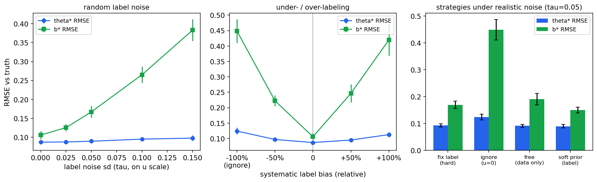

라벨이 틀려도 측정은 버티는가
하한 u는 RSS·LFR 같은 외부 라벨로 주기로 했는데, 실제 라벨은 완벽할 수 없다. 그래서 라벨에 잡음과 치우침을 일부러 넣어 추정이 얼마나 다치는지를 쟀다. 결론: 강건성 θ*는 라벨 오류에 놀랄 만큼 둔감하고, 피해는 난이도 b*에 집중된다. 단연 최악의 선택은 회피가능성을 아예 무시하는 것(u=0)이며, 가장 안전한 기본값은 라벨을 사전분포의 중심으로 쓰는 soft 라벨링이다. 이로써 A 단계(모델 확정)가 끝났다. 코드는 analysis/a1-identifiability/a4_labeler.py에 있다.
무엇을 물었나
섹션 D에서 본 대로 회피가능성 판정에는 정답 하나가 없다. RSS는 보수적이고, 기준 운전자 모델은 모델마다 경계가 다르며(Mattas), FREA의 LFR은 그 AV에 상대적이다. 어떤 규칙을 쓰든 라벨에는 무작위 오차(시나리오마다 들쭉날쭉 틀림)와 체계적 치우침(규칙이 전반적으로 후하거나 박함)이 섞인다. 그렇다면 물어야 할 것은 "어느 규칙이 옳은가"가 아니라 "라벨이 어느 정도 틀려도 우리 측정이 버티는가, 그리고 라벨을 어떻게 모델에 넣는 것이 가장 안전한가"다.
실험 설계 (짝지은 비교)
A1 설계(AV 30 × 생성기 8 × severity 5 × 반복 30) 그대로, 참 라벨에 세 종류의 오류를 주입했다. 무작위 잡음은 u에 표준편차 τ = 0~0.15의 오차를 더하고(평균 u가 0.10이니 τ=0.15는 라벨이 사실상 엉망인 수준), 체계적 치우침은 u를 −100%(완전 무시)부터 +100%(두 배 과대)까지 상대적으로 키우거나 줄였다. 그리고 현실적 잡음(τ=0.05)에서 네 전략을 비교했다: 라벨을 그대로 고정(hard), 회피가능성 무시(u=0), 라벨 없이 데이터에서 자유 추정(free), 라벨을 사전분포 중심으로 쓰되 데이터가 고치게 허용(soft). 비교의 공정성을 위해 모든 조건이 똑같은 참값·데이터 10세트를 마주하는 짝지은 설계를 썼다. 조건 간 차이는 순수하게 라벨·전략의 효과다. 손상은 표준화 강건성 θ*와 난이도 b*의 RMSE로 쟀다.
결과 1 · 피해는 θ*가 아니라 b*에 집중된다
가장 유익한 발견이다. 강건성 θ*의 오차는 라벨 잡음이 τ=0.15까지 커져도 0.087→0.098로 13%만 늘어나는데, 난이도 b*의 오차는 0.106→0.383으로 3.6배가 된다. 치우침에서도 마찬가지로 θ*는 완만한 V, b*는 가파른 V를 그린다. 구조적인 이유가 있다. 라벨이 틀리면 모델은 그 틈을 로지스틱 부분의 난이도로 흡수해 버려서, AV들 사이의 상대적 순서(θ*)는 보호되고 시나리오 쪽 척도(b*)가 비뚤어진다. 실무 함의가 분명하다. AV 비교가 목적이면 거친 라벨로도 충분하지만, 난이도 척도 자체(SUT-불변 난이도라는 우리 주장)를 쓰려면 라벨 품질에 투자해야 한다.
결과 2 · 단연 최악은 회피가능성을 무시하는 것이다
치우침 곡선의 왼쪽 끝(−100%)이 곧 u=0, 지금 분야의 암묵적 표준 관행이다(충돌은 모두 시스템 잘못으로 집계). 이 선택의 비용이 가장 컸다. θ* 오차 +43%(0.087→0.124), b* 오차 4.2배(0.106→0.448)로, 라벨을 두 배 과대하게 주는 것(+100%)보다도 나쁘다. 거꾸로 말하면, 정확하지 않은 라벨이라도 회피가능성을 모델에 넣는 것이 안 넣는 것보다 항상 나았다. Ponn이 무과실 추돌을 평가에서 제외하고 LD-Scene이 귀책을 향후 과제로 남긴 그 지점이, 측정 정확도로 환산하면 이만큼의 비용이라는 뜻이다.

결과 3 · soft 라벨링이 가장 안전한 기본값이다
현실적 잡음(τ=0.05) 아래 네 전략의 성적은 이렇다. θ*에서는 soft 0.090 ≈ free 0.092 ≈ hard 0.093 ≪ 무시 0.124로 셋이 비슷하지만, b*에서는 soft(0.150)가 hard(0.170)와 free(0.191)를 모두 이기고 무시(0.448)와는 세 배 차이가 난다. soft 라벨링은 라벨이 맞는 곳에서는 라벨을 따르고 데이터가 강하게 반박하는 곳에서는 데이터를 따르는 절충이라, 잡음 낀 라벨(hard의 약점)과 정보 부족(free의 약점, A1에서 본 대로 쉬운 칸이 없으면 붕괴)을 동시에 막아 준다. free가 여기서 선전한 것은 A1의 교훈대로 설계가 중간 범위라 하한 근처 데이터가 있었기 때문임을 같이 적어 둔다. 천장에 붙은 설계라면 free는 무너지고 soft는 라벨 쪽으로 기대어 버틴다.
확정한 라벨링 방침
이상을 종합해 A4의 방침을 확정한다. 기본값은 soft 라벨링이다. RSS(주 라벨)로 회피불가 몫의 중심값을 정해 사전분포로 넣되, 데이터가 고칠 여지를 남긴다. 민감도 분석으로는 FREA의 LFR과 Tulpule over-critical 라벨을 대안 중심값으로 바꿔 끼워 결과가 흔들리지 않는지 보고하고(Mattas의 "라벨은 기준 모델에 민감" 우려에 대한 답), 비교 대상으로 u=0(현행 관행)을 함께 보고해 회피가능성 구조의 기여를 보인다. 격자에는 A1 교훈대로 쉬운 칸을 포함해 라벨과 데이터가 서로를 점검할 수 있게 한다.
다음 단계 · A 단계 완료, B(실험 인프라)로
이로써 로드맵 A 단계의 네 항목이 모두 끝났다. 모델은 식별되고(A1), 구간은 약속을 지키며(A2), 난이도는 특징으로 설명·예측되고(A3), 라벨 오류에 어떻게 대비할지도 정해졌다(A4). 다음은 B(실험 인프라)다. 시뮬레이터를 고르고(B1), 강건성이 서로 다른 AV planner 여러 개를 준비하고(B2), 반응형·severity 생성기(B3)와 응답 기록 파이프라인(B4)을 세워, 모의 세계에서 확인한 모든 것을 진짜 AV 데이터로 반복할 준비를 한다.